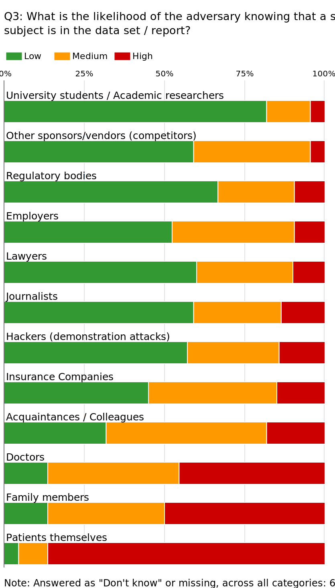

PhUSE 2017
Paper DH09
Plausible Adversaries in Re-Identification Risk Assessment
Lukasz Kniola
ABSTRACT
Identifying plausible adversaries is one of the important steps in assessing the risk of re-identification of shared data. There are different, often opposing arguments to select one of the available models (prosecutor risk, journalist risk, and marketer risk) and the choice, in turn, informs the techniques and metrics used to assess the risk. It can also greatly impact the level of de-identification required. This paper introduces the available models and methodology associated with each of them. It discusses arguments for and against using different approaches, taking into account the data recipient, plausible level of knowledge of a potential adversary and special provisions (rare diseases, small populations, invasion of privacy, etc.). Finally, it attempts to assess the current trends in the industry and look at how sponsors have been defining plausible adversaries in the submissions under EMA Policy 0070.
DISCLAIMER
The scope of this paper is to present the opinions and suggestions of the author. The interpretations of standards and procedures contained in this paper are those of the author and are not necessarily correct. Any views and recommendations stated within this paper are those of the author, and they do not represent the positions of their employer.
DEFINITIONS:
DATA PROVIDER
The custodian of the data, responsible for controlling the process of sharing by anonymizing the data as well as putting in place other controls which prevent data from being misused and/or re-identified. DATA RECIPIENT (INTENDED/UNINTENDED) Person or institution who receives the data as planned by the data provider (intended) or who obtains the data by deliberate or inadvertent actions despite not being defined as the target recipient (unintended).
DATA SET
The collection of all records containing the data on subjects of a trial. When data is shared in the form of datasets or subject listings, data set will mean all the records included in the datasets/listings provided. When data is shared in the form of a report (which may itself include listings, aggregate summaries, narratives and paragraphs referring to induvial subjects) data set will mean all information that can be extracted from the report which relates to subjects of the trial reported.
ADVERSARY
Data recipient who has the motives to attempt and means to succeed the re-identification of the data and intends to use the data in ways which may be harmful to individuals contained in the data set or to the data provider. Note: When an intended recipient inadvertently recognizes an individual in the anonymized data, they also are categorized as adversaries. This paper focuses largely on deliberate attacks
TARGET
Person whose details are in the clinical data or report (e.g. clinical trial participant), who has been selected by the adversary to focus the re-identification attempt on. The person may be chosen because they are known to the attacker or because they have been singled out from the data set as potentially the easiest to re-identify.
INTRODUCTION
Clinical trial data is shared for numerous reasons, such as re-using and re-analyzing the data by its custodian or external researchers. It is also increasingly required by regulatory bodies (EMA Policy 0043 and EMA Policy 0070, etc.). Secondary research, where data is used for purposes other than those specified in the original protocol and not covered by the informed consent may require a level of de-identification. Depending on the designated recipient and sharing methods, different scenarios of attacks on the data should be considered. It is essential to understand that the aim of de-identification is to reduce the risk of re-identification to an acceptable level while retaining as much data utility as possible. This is not equivalent to removing the risk altogether which would inevitably deem the data unusable. This paper focuses on defining and identifying potential adversaries, undesired attempts at re-identification of the shared data, and metrics and methods to assess and manage the risk of deliberate data re-identification.
CONTEXT OF DATA RELEASE
Let’s consider three main contexts of data release. Each presents a different relationship, and therefore level of trust, between the data provider and data recipient. In turn they will represent different level of control and risk.
INTERNAL SECONDARY RESEARCH (DATA RE-USE)
Clinical trial sponsors store and maintain vast amounts of data collected during clinical studies. This data is gathered to fulfil individual trials’ goals, but the cumulative information may often be invaluable in identifying patterns which are not the focus of the original trials. To be able to use the data for purposes not specified in the original protocol, sponsors are required to obtain consent for such use of patients’ data. This may not always be possible or practical. The alternative is to anonymize the data so it is no longer considered personal information. In this scenario access to data is controlled by mechanisms much like those used in primary analysis. While the requirement to de-identify the data needs to be observed, the risk of re-identification attempt is minimal.
EXTERNAL SECONDARY RESEARCH
Sharing data with researchers, under strict contracts, through secure means will ensure that the process is safe and the risks involved are very low. The anonymisation process will have already considered the probability of attempt – rogue employee, data breach, etc. – see (Kniola, 2016) and taken it into account in finding and applying adequate level of de-identification. In non-public data release scenarios, introducing contractual controls and limitations on how the data is accessed, used and disposed of, will significantly limit the motivation of the data recipient to attempt re-identification and illicit use of data.
PUBLIC RELEASE
When data is released to the public domain, there is no control over how it will be used and a potential attacker wanting to access the data can do so with little effort. It is very tempting to opt for the most conservative assumptions as it may seem impossible to assess the motivations of the adversary, the level of knowledge and tools they may possess and use in malicious ways. Doing so may however lead to significant loss of data usability. It is therefore crucial to identify plausible adversaries relevant to the context and contents of the data release which may result in less de-identification and greater data utility retention.
PLAUSIBLE ADVERSARIES
Depending on the context of data release and the type of data there will be a range of candidates to consider as plausible adversaries. Certain potential adversaries will have some personal relation to the target, others won’t. This will reflect the choice of a target as well as possible level of knowledge of the adversary about the target with regard to their being present in the data set and specific details which may help re-identify them. The following figure shows examples of common plausible adversaries which may be considered in the risk assessment.
Figure 1. Plausible adversaries and their relation to potential target.
The overlapping area of the graph represents plausible attackers who may or may not have direct relation to the target depending on what information is sought when attempting re-identification. The figure is somewhat simplistic, and doesn’t exhaust the options or necessarily reflect the nuances of different relationships, but will be helpful in further assessment of the plausible adversaries.
TARGET OF RE-IDENTIFICATION
(Specific) Some attackers may attempt to re-identify a specific person whom they know or suspect to be in the data or report. Those will likely be the scenarios where adversaries have some relation to the target or where a person of interest (public person, someone famous, etc.) is suspected to be in the data or report, and the adversary is attempting to learn new information about that specific target. (Random) Another scenario is a demonstration attack, whereby the attacker is attempting to re-identify any person in the data to prove insufficient anonymisation and/or embarrass the data custodian. In this event, the attacker is likely to focus on a target that is the easiest to re-identify (presenting unique or unlikely characteristics, test results, etc.).
ADVERSARY’S BACKGROUND KNOWLEDGE
(Likely) Depending on the relationship between the adversary and the target, we can assume different level of background knowledge. Friends and colleagues are likely to know less details than family members but more than employers or journalists. (Unlikely) On the other hand, unrelated adversaries are unlikely to know intimate details about persons they are attempting to re-identify. It needs to be stressed that, especially but not exclusively in rare diseases, there is the possibility that the participants will self-reveal their own details. There is a growing number of communities and websites (e.g. www.patientslikeme.com) where patients share their stories, experiences and details. This information can be used by adversaries.
DOES ADVERSARY KNOW THAT TARGET IS IN THE DATA SET?
(Definitely) The other question to consider is whether the attacker knows if the target is in the data set. Clinical trials are specific in that they use relatively small populations (compared to health care or other general public data). It may be that the participants themselves don’t know details like protocol number. Furthermore, due to the strictly confidential nature of clinical trials, the probability of the adversary having access to the full list of trial participants is low. Even more so, if the study is run in multiple centres. Similarly to background knowledge, patients may choose to reveal their participation in clinical trials in online communities. Therefore, the probability of an adversary being certain that the target is in the data set or report, while limited, cannot be completely ignored. (Maybe) A much more likely scenario is one in which the adversary doesn’t know for certain that the target is in the data set. As a result, even if the attacker finds a person matching the details, they cannot be confident that they have identified the correct person. Table 1 illustrates the level of certainty that a specific record belongs to the target. In the example, the adversary is attempting to re-identify a person in a publicly released report. The target is a 22-year-old male.
Table 1. Adversary’s knowledge of target’s participation in the trial vs. certainty of successful re-identification
| T is the only 22-yo male in the set | T is one of many 22-yo males in the set | ||
|---|---|---|---|
| 1 | A has the full list of trial participants. Knows age and sex of each. | (I) A is certain that T has been successfully re-identified. | (II) Based on age and sex alone, A is not certain that a record belongs to T. However, since A has the full participant list, they may have other details which could help confirm re-identification. |
| 2 | A knows that T is in the set. Hasn’t got details of other trial participants | (III) A is not certain that a record belongs to T, because A doesn’t know if T is the only 22-y-o male. However, if T finds only one record for a 22-y-o male, they may suspect it belongs to A. | (IV) When T finds multiple records for 22-y-o males, they don’t know which belongs to T. |
| 3 | A doesn’t know if T is in the set | (V) Even if A finds only one record for a 22-y-o male, they don’t know if it belongs to T. | (VI) When A finds multiple records for 22-y-o males, they don’t know if any of them belongs to T. |
Note: A = Adversary, T = Target
PROSECUTOR, JOURNALIST, AND MARKETER RISK
INTRODUCTION TO THE MAIN MODELS
It has already been discussed that there are different plausible adversaries to consider. Each will be characterized by their motivation, means, intent to harm as well as background knowledge of the target and knowledge of target’s participation in the trial. It is that last attribute which informs the metrics used to manage and quantify the risk of re-identification. The three main models (or metrics) are explained below.
PROSECUTOR RISK
We are talking about Prosecutor Risk if the adversary can know that the target is in the data set. This fact alone significantly increases the risk of successful re-identification. This model is represented by rows 1 and 2 in table 1. When calculating the risk of re-identification of a data set, there are numerous options as to what population should be used to find equivalence class sizes (to find individual risks of re-identification for each subject in the data set). See (Kniola, 2016) for more details. Under prosecutor risk the options are limited to study population or, if multiple studies are released as part of a bigger submission, and under additional conditions, population of the submission.
JOURNALIST RISK
When the adversary doesn’t know for certain that the target is in the data set, we are talking about Journalist Risk. This is illustrated by row 3 in table 1. Under journalist risk we can use bigger populations to calculate the risk of re-identification of all subjects and therefore of the data set overall, like similar studies, general population. The wider the population used, the lower the calculated risk. To put it another way, the wider the population, the less de-identification is required to meet pre-specified thresholds and therefore more data utility is retained. Crucially, even if the attacker finds a record consistent with the target, and that record is unique across the data set, the attacker cannot be certain that this record does indeed belong to the target (as long as the target is not unique in the wider population used to assess the journalist risk).
MARKETER RISK
Under Marketer Risk, the adversary attempts to re-identify as many subjects in the data set as possible. With respect to sharing clinical data or reports, the expectation is to prevent any successful re-identification. If we manage the risk of re-identifying an individual subject, then we also manage the risk of multiple subjects being re-identified.
RELATIONSHIP BETWEEN THE THREE RISKS
When all three types are measured, the following will always be true:
- Journalist risk is no greater than Prosecutor risk
- Marketer risk is no greater than Journalist risk
Therefore:
Prosecutor risk ≥ Journalist risk ≥ Marketer risk
Since we always protect the data set against either the prosecutor or the journalist risk (depending on the adversary’s knowledge of target’s participation), then by default we also protect against the marketer risk.
MAXIMUM AND AVERAGE RISK. UNIQUENESS IN THE DATA SET
If one of plausible adversaries considered for a data release is a hacker attempting a demonstration attack, especially in the context of public data release, then it is necessary to protect each subject’s identity equally. Therefore, in such scenario the maximum risk across all record should be used to calculate overall risk of re-identification of the data set. This way no subject’s individual risk is higher than the overall risk. Conversely, if demonstration attacks can be discounted and there are controls in place (such as contracts and access restrictions under controlled data release), then average risk can be used as the metric describing the overall re-identification risk of the data set. It does however mean that individual risk of some subjects will be higher than overall risk. Some subjects may still be unique across the data set. Table 1 suggests that having subjects whose details (quasi-identifiers) are unique across the data set will increase the likelihood of the adversary being able to successfully re-identify the target, especially if the attacker suspects the target to be in the data set. Per the usual anonymisation process, applying techniques like generalization, suppression, etc. will reduce uniqueness of subjects. Including uniqueness check (i.e. k-anonymity) in addition to calculating the overall risk is a good way of reducing adversary’s chances of successfully re-identifying any portion of the data.
HARM
The calculations of re-identification risk do not take directly into account potential harm to individuals or data custodian in the event of successful re-identification. However, intent to harm and potential harm (emotional and financial) may be considered in the risk assessment and in the process of identifying plausible adversaries. Prosecutor or journalist risk metrics focus on managing the risk of identity disclosure. This is when an adversary can assign an identity to a record in the data set. The metrics do not directly consider the risk of attribute disclosure, which is when an adversary learns something new about the target.
THOUGHTS ON POTENTIAL HARM
Could it be argued that successful re-identification is harmful to an individual only if the adversary learns something new about that individual? In that context, if a doctor is able to recognize their patient in a clinical report by comparing the results with their medical records, the harm is negligible as the said doctor has not learned anything they didn’t know previously. If a reporter is able to match details of the target in the report with details self-revealed by that subject in online communities, the harm is again questionable as the adversary doesn’t find out anything about the target that hasn’t already been available in the public space. Going further, could it be argued that re-identification is only harmful if the newly learnt information is sensitive in any way? If a family member recognizes the target and finds out non-significant lab results, the potential harm is inconsequential. Note: The above paragraph is only a speculation of the author. Potential harm is a matter of perception. It would be very hard to quantify. Understanding what information is significant or sensitive may change depending on therapeutic areas, types of trials, etc. Potential harm is secondary to the re-identification risk itself and by focusing on the latter, we are also managing the former. Demonstration attack may be harmful to the data provider even if only a single subject is confirmed to be in the data set and any of their records are identified
SURVEY
In support of this paper, a survey was conducted and members of the data transparency community were invited to answer questions on plausible adversaries, with the aim to gauge perceptions. The survey did not follow scientific method to prove or disprove any specific hypothesis. Its results are intended to enhance the discussion and not as a basis to promote processes or standards.
SURVERY RESULTS
23 responders completed the survey. The proportions of answers are shown below. For detailed results, see appendix 1. The survey consisted of six questions, each assessing twelve identified potential adversaries with regards to their likely knowledge of the target and data set overall as well as motivation to attempt re-identification and use the data for malicious purposes. The pre-selected adversaries are consistent with Figure 1, with addition of “Patients themselves” category.
The first question (Q1) addressed the motivation of potential attackers. Of note are journalists and hackers attempting a demonstration attack (>95% of medium/high answers). To a lesser degree – insurance companies (around two thirds of medium/high answers). Results suggest that those three types of attackers are considered to be the most likely to have the motivation to attempt a re-identification. The second question (Q2) focused on the means of attackers. Hackers are considered to have the necessary tools at their disposal. High number of medium/high responses for journalists and insurance companies seems to confirm that the three categories are strong candidates for plausible adversaries when assessing the risk.
The next two questions (Q3, Q4) assessed the perceived level of knowledge about a potential target. Firstly, if the adversary knows that the target is in the data set, and if so, how much details about the target are they likely to know. Results seem consistent for the two questions, suggesting adversaries who know of target’s participation in a trial are likely to have better knowledge of the person with regards to other details. Note that categories highlighted earlier are less likely to be certain of target’s presence in the data set or to know their details.
The fifth question (Q5) assessed the potential for the adversary to know the full list of subjects in the attacked data set. Overwhelmingly the responders suggested that such scenario is not likely. Once again, hackers are considered to be most likely to possess that level of knowledge about the data set, with 35% answering “medium” and only <5% answering “high”. The final question (Q6) attempted to appraise the intent to harm. The answers show the clearest division based on adversary’s relation to the target and their likely knowledge of target’s details. Once again hackers as well as journalists and insurance companies are expected to harm the target or data custodian if they were successful in re-identifying the target. The survey did not ask for potential harm in the event of successful re-identification.
SUMMARY
Potential attackers related to a target and likely to know them directly (family, friends, employers) may intend to harm the target if they are successful in identifying them in the data set. They don’t however seem highly motivated and don’t have the means required. Attackers, who may possess details about a target, but don’t have a personal relationship (lawyers, journalists, insurance companies) are much more likely to use the information in ways that may harm the target. Their means and motivation as well as potential knowledge of target’s details is also significant. Adversaries with no relation to the target (researchers, regulatory bodies, competitors) are characterized by the lowest likelihood to harm the target, combined with low likelihood of detailed knowledge and low level of motivation. Patients themselves and the doctors are unlikely to use the information in malicious way. It is not surprising that the category showing the most dangerous characteristics are hackers. With high level of motivation and intent to harm they are also likely to have the means and resources to attempt an attack. Their intimate knowledge of the target, both in terms of their presence in the data set and knowledge of other details is somewhat limited, compared to other adversaries, but cannot be overlooked.
ASSESSMENT OF RECENT SUBMISSIONS AND EXPECTATIONS UNDER EMA POLICY 0070
REGULATORS’ EXPECTATIONS
The focus on data sharing is increasing and a growing number of bodies is or will soon be requiring the results of clinical trials to be released. Although reduced from the original expectations, ICMJE will soon expect that all publishers will be ready to share their data. EMA Policy 0070 is active and now requires that clinical reports are released to public domain. Health Canada is working on similar policy. Japan is likely to follow the trend. EMA Policy 0070 has been lately the focus of many discussions. It affects all sponsors who apply for marketing authorization in the European Union. Recent revision of the guidance on implementation of the policy (European Medicines Agency, 2017) includes additional detail on identifying plausible adversaries who should be considered in the process of identifying potential attackers and the risk assessment in general. Specifically, section 5.4, point 2 suggests the following scenarios in the context of public data release:
- Demonstration attack in which adversaries are most likely interested in showing that an attack is possible.
- An organisation seeking financial gain in finding out who the trial participants are.
- A trial participant being of particular public interest of the press or other body.
- A group or individual intending to embarrass the data controller, or to undermine the public support for release of data.
- A random inadvertent recognition of a trial participant by someone well acquainted.
The document then explains that “Each of the scenarios described above reflect possible adversaries and plausible attacks, having different risk implications. Applicants/MAHs should identify possible adversaries and plausible attacks on the data and evaluate the impact on the risk of re-identification.” Each submission under Policy 0070 includes an Anonymisation Report which describes the details of risk assessment, methods of anonymisation used, and also includes description of adversaries which the sponsor deems plausible. In the reports submitted to date, the assumptions and conclusions are largely consistent with those proposed by the implementation guide. One additional scenario confronted by the applicants is one in which:
- A vulnerable patient recognises their sensitive information (alcoholism, mental disease, depression, abortions, etc.) and is anxious or fearful that it can be found in a document available to the public.
Regarding metrics used to quantify the overall risk of re-identification, the implementation guide states: “The most appropriate way to measure the risk of re-identification for an entire dataset, in the context of public disclosure, is through the maximum risk, which corresponds to the maximum probability of re-identification across all records. (…) the probability of re-identification of a record in a data set is 1 divided by the frequency of trial participants with same category/value of a set of the quasi identifiers (group size).” The first sentence clearly suggests that maximum risk is used. The second part of the quote may be interpreted as expectation to use prosecutor risk, although it might be argued that journalist risk would also be applicable.
TRENDS IN THE INDUSTRY
Experience shows that applying prosecutor risk is technically easier. Calculating equivalence class sizes based only on the population of the study, or the pool of studies included in the submission, means that only the data already present in the released data set is used. Journalist risk requires the use of data from trials similar to those in the submission. Additional conditions need to be defined. What constitutes a “similar study”? What similarities are justifiable (size, geographic area, age range of subjects, time and length of trial, drug tested, therapeutic area, etc.)? Since the experience in that area is still limited in the industry and there aren’t well defined standards or widely available tools, sponsors may find it not only easier to apply, and therefore cheaper, but also more defendable to choose prosecutor risk as their preferred metric. The downside of such choice is that prosecutor risk – being the more conservative approach – almost always leads to lower data utility, especially with respect to subject level data. In the context of public data releases, in pursue of greater data utility – which is arguably the ultimate measure of how successful data sharing efforts are – it would be desirable if guidelines were agreed across the industry which would justify the use of journalist risk and define criteria needed to select “similar studies”. Such standards and guidelines would need to be backed by evidence that using journalist rather than prosecutor risk is justifiable and adequately manages the risk of re-identification for all plausible adversaries.
CONCLUSIONS
Selecting and assessing plausible adversaries is an important step in re-identification risk assessment. Depending on the context of data release, different attackers will be considered likely. For non-public data disclosure scenarios, contractual controls and limitations on data access and use significantly limit the motivation of the data recipient to attempt re-identification. In the case of public release, correct selection of plausible adversaries is equally critical, as the decisions will impact the methods and the amount of de-identification required, and therefore will have a direct effect on data utility.
Adversaries can be categorized in several ways, depending on:
- their direct relation to target,
- their background knowledge of the target,
- whether they choose a specific or random person as the target,
- whether they know that the target is in the data set.
The last condition will inform the choice of metric used to calculate the risk. Prosecutor risk will be chosen if the adversary knows the target to be in the data set. Otherwise, journalist risk can be used. In the context of public data release, it is expected to use maximum risk to describe the overall possibility of data set re-identification. The choice between prosecutor and journalist metrics will depend on what adversaries the data custodian deems likely to attempt re-identification. Currently, especially with regards to EMA Policy 0070 anonymisation efforts, prosecutor risk seems to be the preferred option. Since it’s the more conservative option, it may be more justifiable and defendable. However, if journalist risk is proven to be a sufficient metric to describe risks under public data disclosure, it would potentially greatly increase data utility. Apart from having to be widely accepted by the industry it would also require better definitions of what populations could be used in the risk calculations. The adoption may also be somewhat impeded by greater complexity compared to prosecutor risk. Regardless of the metric chosen, it has been shown that apart from the calculated risk meeting the necessary threshold, it is important to address the issue of uniqueness within the data set. If the anonymisation efforts leave records which are still unique in their characteristics (age, race, country, etc.) then adversaries may take advantage of that fact and increase their chances of successful re-identification. The results of the survey point to hackers, attempting a demonstration attack, as well as journalists and insurance companies as potential adversaries who may be the most motivated to attempt to re-identify data and use it in malicious or illicit ways. They are also likely to have the right tools and resources to do so. Their background knowledge of targets is however somewhat limited. The full results of the survey are provided in Appendix 1.
Growing number of organizations and regulatory bodies are expecting and requesting that the results of clinical trials are shared with the community and the public. This inevitably leads to increased overhead and costs for the data custodians on one hand but, on the other, will allow for greater access to the data which has historically been largely unavailable, for the development of new tools, standards and processes, and crucially for new connections and discoveries to be made in pharmaceutical industry and beyond.
REFERENCES
Canadian Institute for Health Information. (2010). ‘Best Practice’ Guidelines for Managing the Disclosure of De-Identified Health Information. Ottawa, ON: www.cihi.ca.
El Emam, K. (2013). Guide to the De-Identification of Personal Health Information. Boca Raton, FL: CRC Press.
El Emam, K., Arbuckle, L. (2013). Anonymizing Health Data Case Studies and Methods to Get You Started. Sebastopol, CA: O’Reilly Media.
Institute of Medicine. (2015). Sharing Clinical Trial Data Maximizing Benefits, Minimizing Risk. Washington, DC: The National Academies Press.
Kniola, L (2016). Calculating the Risk of Re-Identification of Patient-Level Data Using Quantitative Approach. Phuse Annual Conference, 2016.
Pharmaceutical Users Software Exchange (PhUSE). De-identification standards for CDISC SDTM 3.2.
European Medicines Agency. (2014). EMA/240810/2013 - Publication of clinical data for medicinal products for human use. http://www.ema.europa.eu
European Medicines Agency. (2017). EMA/90915/2016 - External guidance on the implementation of the European Medicines Agency policy on the publication of clinical data for medicinal products for human use. http://www.ema.europa.eu
CONTACT INFORMATION
Your comments and questions are valued and encouraged. Contact the author at:
Lukasz Kniola
Brand and product names are trademarks of their respective companies.
APPENDIX 1 – RESULTS OF THE SURVEY “PLAUSIBLE ADVERSARIES IN RE-IDENTIFICATION OF CLINICAL TRIAL DATA AND REPORTS”
MOTIVES TO ATTEMPT RE-IDENTIFICATION AND MEANS TO SUCCEED
Q1: What is the likely level of motivation to attempt re-identification of specific subject or any subject in the data set?
| Low | Medium | High | Don't Know | |
|---|---|---|---|---|
| Patients, themselves | 10 | 7 | 5 | 1 |
| Family members | 10 | 6 | 6 | 1 |
| Acquaintances / Colleagues | 14 | 6 | 1 | 2 |
| Employers | 15 | 5 | 2 | 1 |
| Doctors | 10 | 12 | 0 | 1 |
| Lawyers | 9 | 8 | 4 | 2 |
| Journalists | 1 | 9 | 12 | 1 |
| Insurance Companies | 7 | 8 | 7 | 1 |
| University students / Academic researchers | 15 | 4 | 4 | 0 |
| Regulatory bodies | 20 | 3 | 0 | 0 |
| Other sponsors/vendors (competitors) | 13 | 6 | 4 | 0 |
| Hackers (demonstration attacks) | 1 | 4 | 17 | 1 |
Q2: What is the likelihood of the adversary having the right tools and resources to succeed?
| Low | Medium | High | Don't Know | |
|---|---|---|---|---|
| Patients, themselves | 16 | 5 | 1 | 1 |
| Family members | 16 | 5 | 1 | 1 |
| Acquaintances / Colleagues | 13 | 9 | 0 | 1 |
| Employers | 10 | 8 | 3 | 2 |
| Doctors | 12 | 5 | 5 | 1 |
| Lawyers | 6 | 10 | 5 | 2 |
| Journalists | 3 | 9 | 10 | 1 |
| Insurance Companies | 1 | 7 | 13 | 2 |
| University students / Academic researchers | 6 | 7 | 9 | 1 |
| Regulatory bodies | 9 | 8 | 4 | 2 |
| Other sponsors/vendors (competitors) | 4 | 6 | 11 | 2 |
| Hackers (demonstration attacks) | 0 | 0 | 20 | 2 |
KNOWING DETAILS OF SPECIFIC INDIVIDUALS AND STUDIES
Q3: What is the likelihood of the adversary knowing that a specific subject is in the data set / report?
| Low | Medium | High | Don't Know | |
|---|---|---|---|---|
| Patients, themselves | 1 | 2 | 19 | 1 |
| Family members | 3 | 8 | 11 | 1 |
| Acquaintances / Colleagues | 7 | 11 | 4 | 1 |
| Employers | 11 | 8 | 2 | 2 |
| Doctors | 3 | 9 | 10 | 1 |
| Lawyers | 12 | 6 | 2 | 3 |
| Journalists | 13 | 6 | 3 | 1 |
| Insurance Companies | 9 | 8 | 3 | 3 |
| University students / Academic researchers | 18 | 3 | 1 | 1 |
| Regulatory bodies | 14 | 5 | 2 | 2 |
| Other sponsors/vendors (competitors) | 13 | 8 | 1 | 1 |
| Hackers (demonstration attacks) | 12 | 6 | 3 | 2 |
Q4: Assuming the adversary knows that subject is in the set, what is the likely level of knowledge (relevant to re-identification) about the targeted person?
| Low | Medium | High | Don't Know | |
|---|---|---|---|---|
| Patients, themselves | 0 | 2 | 20 | 1 |
| Family members | 2 | 6 | 14 | 1 |
| Acquaintances / Colleagues | 4 | 11 | 7 | 1 |
| Employers | 4 | 12 | 6 | 1 |
| Doctors | 2 | 6 | 14 | 1 |
| Lawyers | 10 | 9 | 2 | 2 |
| Journalists | 11 | 8 | 3 | 1 |
| Insurance Companies | 7 | 9 | 6 | 1 |
| University students / Academic researchers | 18 | 3 | 0 | 2 |
| Regulatory bodies | 18 | 4 | 0 | 1 |
| Other sponsors/vendors (competitors) | 17 | 5 | 0 | 1 |
| Hackers (demonstration attacks) | 11 | 8 | 3 | 1 |
Q5: What is the likelihood of the adversary knowing the full list of subjects in the data set / report?
| Low | Medium | High | Don't Know | |
|---|---|---|---|---|
| Patients, themselves | 22 | 1 | 0 | 0 |
| Family members | 23 | 0 | 0 | 0 |
| Acquaintances / Colleagues | 22 | 1 | 0 | 0 |
| Employers | 19 | 4 | 0 | 0 |
| Doctors | 15 | 5 | 2 | 1 |
| Lawyers | 22 | 1 | 0 | 0 |
| Journalists | 20 | 3 | 0 | 0 |
| Insurance Companies | 20 | 3 | 0 | 0 |
| University students / Academic researchers | 19 | 2 | 2 | 0 |
| Regulatory bodies | 16 | 5 | 2 | 0 |
| Other sponsors/vendors (competitors) | 22 | 1 | 0 | 0 |
| Hackers (demonstration attacks) | 14 | 8 | 1 | 0 |
INTENT TO HARM
Q6: In the event of successful re-identification, what is the likelihood that the adversary will intend to harm the re-identified individual or the sponsor of the trial?
| Low | Medium | High | Don't Know | |
|---|---|---|---|---|
| Patients, themselves | 18 | 2 | 1 | 2 |
| Family members | 11 | 8 | 1 | 3 |
| Acquaintances / Colleagues | 11 | 8 | 1 | 3 |
| Employers | 10 | 8 | 1 | 4 |
| Doctors | 19 | 2 | 0 | 2 |
| Lawyers | 5 | 8 | 7 | 3 |
| Journalists | 2 | 11 | 7 | 3 |
| Insurance Companies | 4 | 10 | 6 | 3 |
| University students / Academic researchers | 17 | 3 | 1 | 2 |
| Regulatory bodies | 17 | 5 | 0 | 1 |
| Other sponsors/vendors (competitors) | 13 | 8 | 1 | 1 |
| Hackers (demonstration attacks) | 3 | 5 | 13 | 2 |